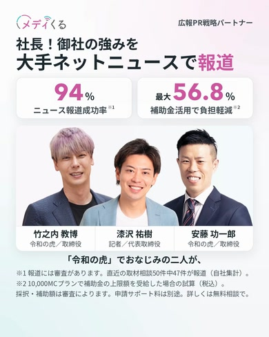
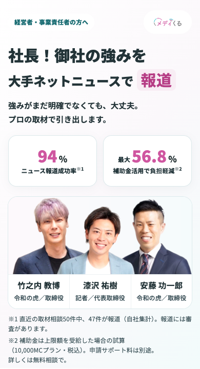
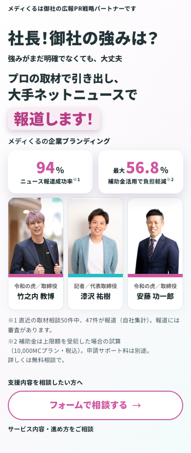
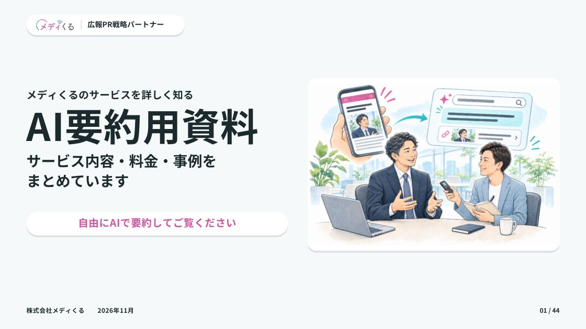
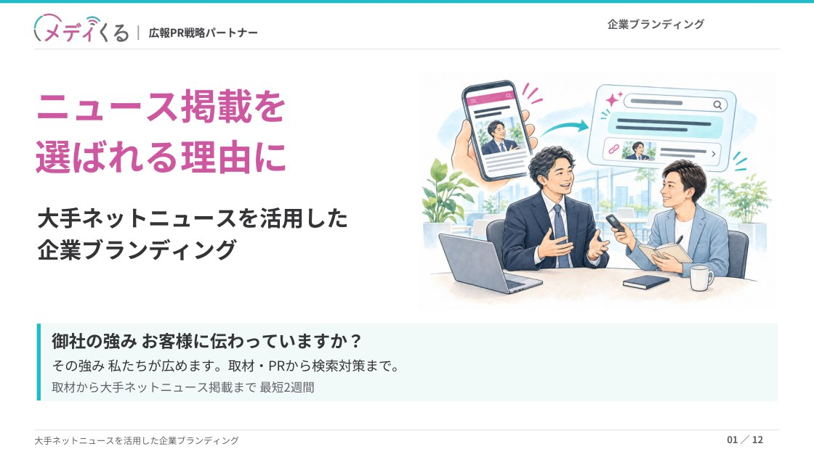
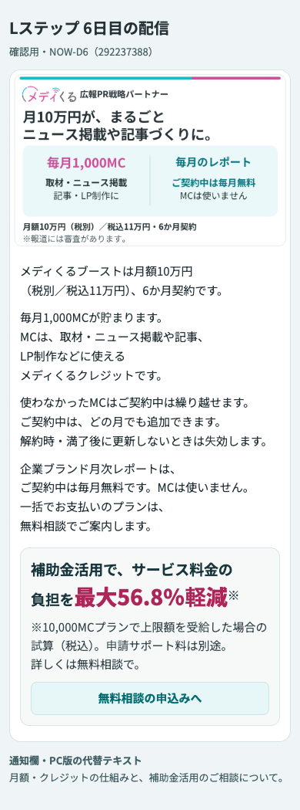

広告素材6案
静止画3案と広告動画3案。フィード4:5・縦長9:16の2サイズです。
広報PR戦略パートナー メディくる
説明動画、広告、Webページ、営業・商談資料を
ひとつの一覧にまとめました。
原寸画像・音声付き動画・PDFをPCとスマホで確認できます。
白基調・補助金表示・新プランにそろえた制作物です。


公開中のLP・HPと、変更箇所の比較をご覧いただけます。


新プラン・10の施策・補助金の試算を反映した最新版です。PDFは保存できます。


LINEの文面・画像を確認できます。SNSとX投稿の一式は、作成時点が分かる記録として残しています。

X・Instagram・TikTok・Facebookの紹介文と画面の記録です。現在の公開画面と同じとは限りません。